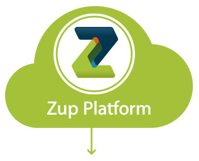

Plataform
Arquitetura
A plataforma Zup combina elementos em uma arquitetura flexível, econômica, sólida e capaz de suportar as necessidades de negócio de cada cliente.

Integração e sistematização dos componentes
Fluxo de Comunicação
Principais fluxos de comunicação da ferramenta, a partir dos quais é possível ter um melhor entendimento de como os elementos arquiteturais interagem
Controle de Acesso
- Usuário informa credenciais de acesso
- Zupme UI envia credenciais informadas para User Manager
- User Manager consulta o provedor de autenticação (LDAP, AD) e retorna uma sessão de acesso caso as credenciais sejam válidas.
Deploy de APIs
- Usuário cria API que é armazenada na base de dados PostgreSQL
- Usuário realiza o Deploy no Gateway (Entrypoint) desejado
- Configuração de APIs é enviada para o Gateway na porta de deploy configurada
- Gateway recebe configurações e armazena no Couchbase
- Gateway envia informações de ofuscação para o Event Handler
- Event Handler recebe configurações e armazena no Couchbase
- API está publicada e pronta para ser consumida.
Processamento de Requisições
- Aplicativo envia request para o Gateway
- Gateway aplica possíveis transformações no request e envia para o Endpoint
- Gateway envia response para o aplicativo após aplicar possíveis transformações
- Gateway envia evento para o Event Handler
- Event Handler envia evento para Logstash que aplica possíveis ofuscações e persiste no ElasticSearch
Visualização de Logs
- Usuário cria query através da interface de usuário
- Zupme UI envia query para API Manager
- API Manager realiza consulta no Elasticsearch
- Elasticsearch retorna eventos para o API Manager
Monitoramento

Um monitoramento proativo de TI é fundamental para a empresa reduzir ou eliminar o tempo de inatividade da sua infraestrutura, a fim de minimizar os prejuízos gerados por desastres, e principalmente, melhorar a qualidade dos serviços prestados aos seus clientes.
Dessa forma, a plataforma Zup foi desenvolvida a fim de facilitar a detecção de incidentes que vão desde simples notificações por e-mail, até integração com sistemas de monitoramento robustos.
O que monitorar?
Api Manager
Processos
- Puma (api) - Ruby Web Server
- Puma (user) - Ruby Web Server
- Nginx - HTTP and reverse proxy server
Portas
- 443
- 6000
- 6010
PostgreSQL
Processos
- postgres - Sistema de banco de dados
Portas
- 5432
Data Volumes
- /data/pqsql
Gateway
Processos
- Node (zupme-gateway.js) - JavaScript runtime built
- Node (event-processor.js) - JavaScript runtime built
Portas
- 443
- 8443
- 8020
Couchbase
Processos
- beam.smp - NoSQL database
Portas
- 8091
- 8092
Event Handler
Processos
- Iojs (cockpit-event-handler.js) - JavaScript runtime built
- Iojs (event-broker.js) - JavaScript runtime built
- Logstash - Java
Portas
- 8005
- 8009
- 8006
ElasticSearch
Processos
- elasticsearch - Java
Portas
- 9200
- 9300
Data Volumes
- /data/elasticsearch
Problemas e riscos potenciais (Experiências do Time Zup)
Erro ao logar
Quando um usuário tenta usar suas credenciais de acesso para entrar na plataforma, e um erro desconhecido é retornado, geralmente a causa é a falha na consulta do User Manager com o servidor LDAP.
Verificar status do serviço do User Manager
Erro 500 ao realizar deploy
Erro 500 (Internal Server Error) pode estar relacionado a muitos motivos. Nesse caso é preciso verificar os logs para tentar diagnosticar.
Os motivos mais frequentes são
Falha de comunicação entre o zupme-api-manager-api e o zupme-gateway
# zupme-api-manager-api logs --tail
Falha de comunicação entre o zupme-gateway e o zupme-event-handler
# zupme-gateway logs --tail
Falha de comunicação entre o zupme-gateway e o couchbase
Verificar se há conectividade na porta 11211, 8091 e 8092 do Gateway para o Couchbase.# zupme-gateway logs --tail
Falha de comunicação entre o zupme-event-handler e o couchbase
cockpit-event-handler logs --tail
Os logs não são exibidos
Quando não são exibidos Logs na sessão de Logs da aplicação de um dia para o outro, pode ser que os índices e aliases do ElasticSearch não tenham sido criados.
$ tail -f /var/log/zupme-api-manager-api/job_scheduler-1.log $ tail -f /var/log/zupme-api-manager-api/es_worker-1.log
Como verificar se os índices e aliases do ElasticSearch foram criados
$ curl http://elasticsearch-host:9200/_cat/indices$ curl http://elasticsearch-host:9200/_cat/aliases